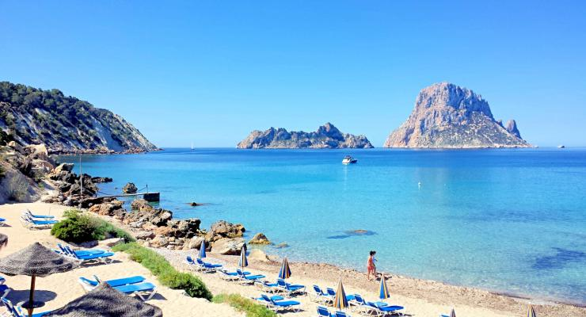
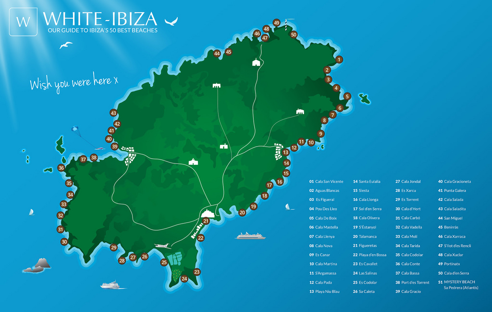
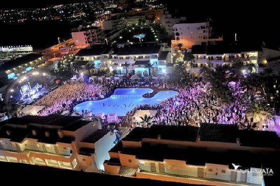
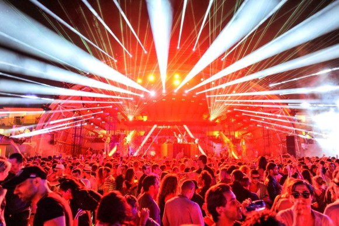
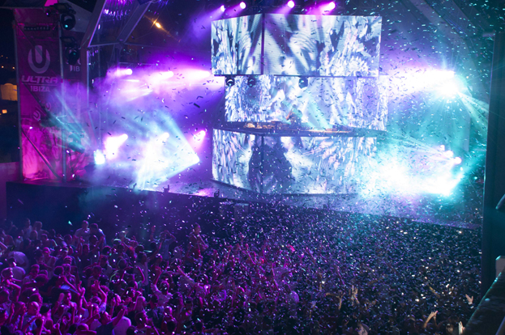
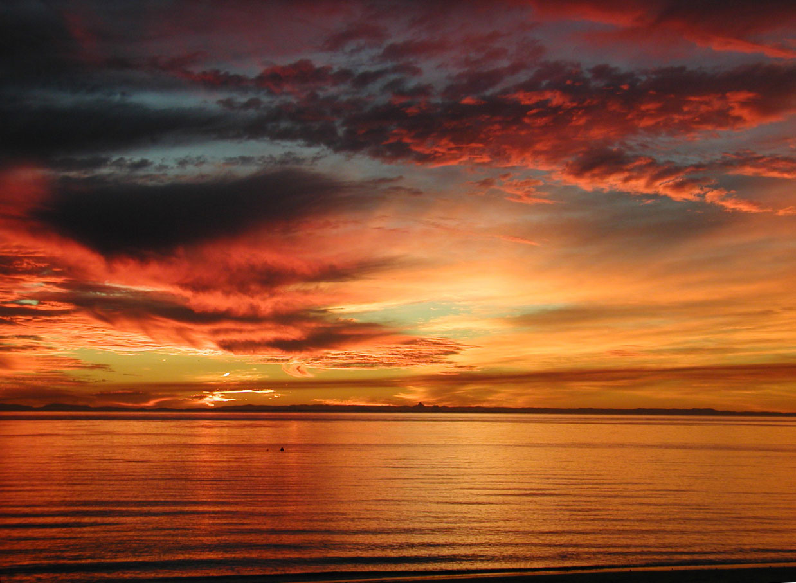

La Ciudad
Ibiza es una isla en el Mar Mediterráneo frente a la costa de España. La población de la isla es de aproximadamente 150.000 personas. Ibiza es mundialmente famosa por su vida nocturna y la escena de club. En los turistas de verano acuden a Ibiza para ir de fiesta toda la noche. También cuenta con fantásticas playas en toda la isla.
Las Playas
Siendo una isla de Ibiza tiene playas en todos los lados. En total hay 51 playas con nombre de la isla. Cada playa tiene sus propias cosas para que sea especial, pero casi todos tienen restaurantes, bares y lugares de ocio a su alrededor.
Vida Nocturna
La vida nocturna en Ibiza es mundialmente famoso. Es el hogar de los clubes nocturnos de fama mundial. Privilege, Amnesia, Space, Pacha, Es Paradis y DC10. Las dos áreas principales de la isla, que son el hogar de esta noche son la ciudad de Ibiza, la capital de la isla, y San Antoni. La escena de la fiesta de verano comienza la primera semana de junio, con la apertura de los partidos. Durante todo el verano los mejores DJs vienen de todo el mundo para jugar el circuito de clubes de la isla. También hay fiestas de música subterráneas en toda la isla durante todo el verano. Todo llega a su fin en la primera semana de octubre con los partidos de cierre.
  Vida Nocturna
El principal tipo de música que Ibiza es conocida por es la música electrónica. Más específicamente, los géneros de house y trance. Los turistas vienen a la isla para la música en los clubes. Una noche típica comienza a medianoche y al final alrededor de las 6 de la mañana. El gobierno puso en marcha una regla que todos los clubes deben cerrar a las 6 int él mañana. El amanecer es un gran tema en la isla porque la mayoría de los turistas son todavía despierto en ese momento. La plazo "disco sunrise" se utiliza a menudo en la isla.
